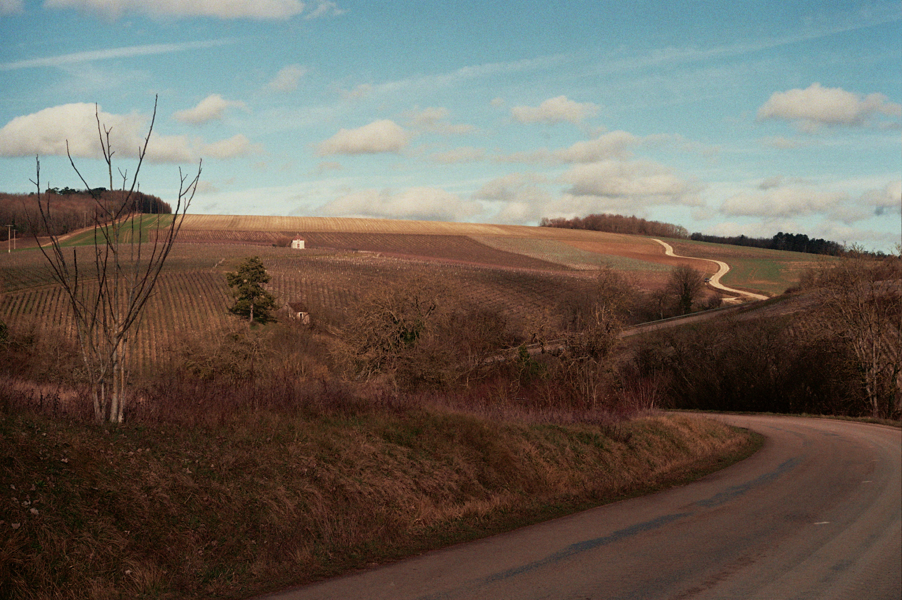
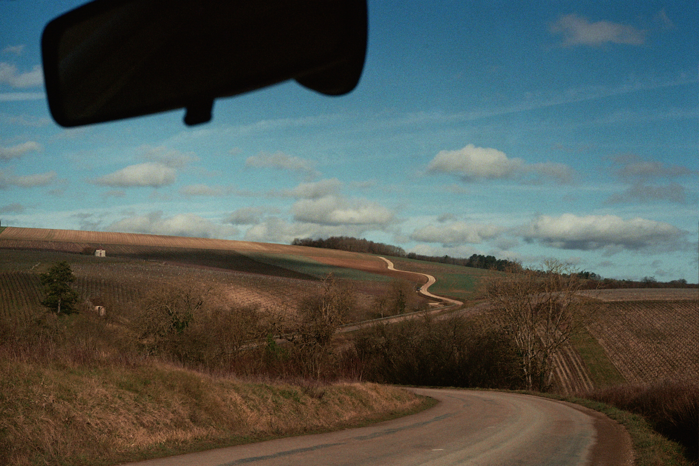
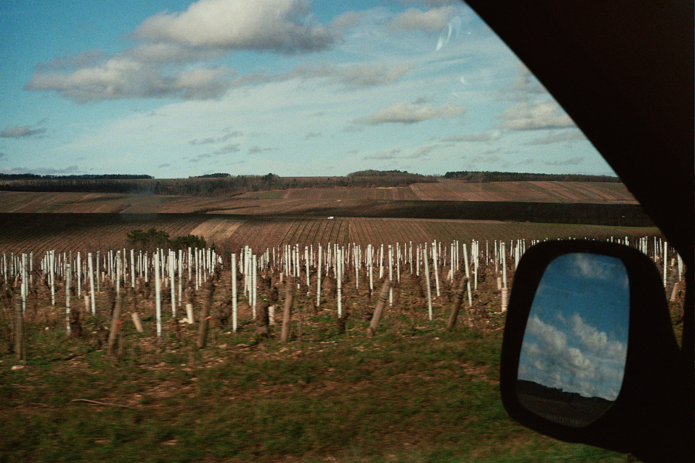

Chablis
Voor reizigers die vanuit onze contreien naar Bourgogne trekken, komen we in Chablis als eerste grote wijngebied van de streek uit, ook wel de gouden poort van Bourgogne genoemd, waar de wijngaarden haast elk stukje land hebben ingepalmd en enkel de chardonnaydruif staat aangeplant waarmee men de typische frisse, minerale witte wijn produceert die de naam Chablis mag dragen.
Ik beeld me altijd in hoe hier 200 miljoen jaar geleden nog een zee lag en hoe zich op de bodem laag na laag schelpen, kalk en resten van zeedieren ophoopten die later zouden verharden tot het bleke gesteente dat vandaag te zien is tussen de wijnranken.
Men maakt hier zelf een onderscheid in de kalkrijke ondergrond: de lagen die erg rijk zijn aan fossielen en schelpen worden het Kimmeridgien genoemd, en op die bodems liggen de beste wijngaarden. De premier crus en grands crus bevinden zich vrijwel uitsluitend op dit gesteente.
Ik ga al jaren terug naar Château de Fleys, een familiedomein dat al meerdere generaties wordt doorgegeven. Ik ben er intussen kind aan huis en ook wanneer ik de streek verder verken, kom ik telkens weer bij hen terug. Het zijn de wijnen die, voor een betaalbare prijsklasse, bij mij de meeste emotie oproepen.
Fleys is een naburig dorpje van Chablis en maakt nog steeds deel uit van dezelfde streek. Alle wijnen van het domein zijn afkomstig van druiven die aangeplant zijn op de Kimmeridgienbodem.
Naast hun gewone Chablis produceren ze ook een premier cru van het perceel Mont de Milieu, een gerenommeerde wijngaard die wijnen oplevert met meer rondeur en diepte, en een langere afdronk dan de dorpsappellatie.
Vezelay Chablis Irancy 2026 (onderstaande foto's zijn van Chablis)



Wijnen
Château de Fleys
Chablis 2024
Deze Chablis komt van wijngaarden op de rechteroever van de Serein met een westelijke expositie op Kimmeridgien-bodems. De stokken zijn gemiddeld 30 jaar oud, met een plantdichtheid van 550 wijnstokken per hectare en een rendement van 60 hl/ha. De oogst gebeurt machinaal en de vinificatie omvat een volledige malolactische gisting, gevolgd door opvoeding op fijne lies in inox tanks.
In de neus komen florale toetsen van witte bloemen en lentebloesems naar voren, aangevuld met aroma’s van appel, perzik en citrus, met een lichte hint van brioche.
In de mond is de wijn fris met subtiele rondeur in de aanzet die gecounterd wordt door levendige aciditeit. De afdronk is middellang en verfrissend met citrustonen en de mineraliteit die blijft hangen, wat deze wijn ideaal maakt als aperitief of bij fruits de mer en fijne visgerechten.
Chablis ‘grand Chaume’ 2023
Deze Chablis, “La Grande Chaume”, is afkomstig van geselecteerde percelen nabij de premier cru “Les Fourneaux” op de rechteroever van de Serein, met een zuidwestelijke expositie op Kimmeridgien-bodem. De wijn is gemaakt van chardonnay die afkomstig is van wijnstokken die ongeveer 40 jaar oud zijn en een rendement van 50 hl/ha hebben. De vinificatie bestaat uit een volledige malolactische gisting en ongeveer 30% van de wijn rijpt op Bourgondische eikenvaten van 1, 2 en 3 jaar oud, terwijl 70% op inox wordt opgevoed.
In de neus vinden we wit fruit en florale tonen, aangevuld met een lichte kruidigheid van hout en een subtiele botertoets. In de mond is de wijn tegelijk rond en vol, met aroma’s van rijp wit fruit, perzik en een toets van de mineraliteit die typisch is voor Chablis. De frisse zuren geven spanning en balans, waardoor het geheel elegant en levendig blijft. De afdronk is lang en mineraal, met een frisse citrusachtige finale. Ideaal als aperitief of bij fruits de mer en verfijnde visgerechten.